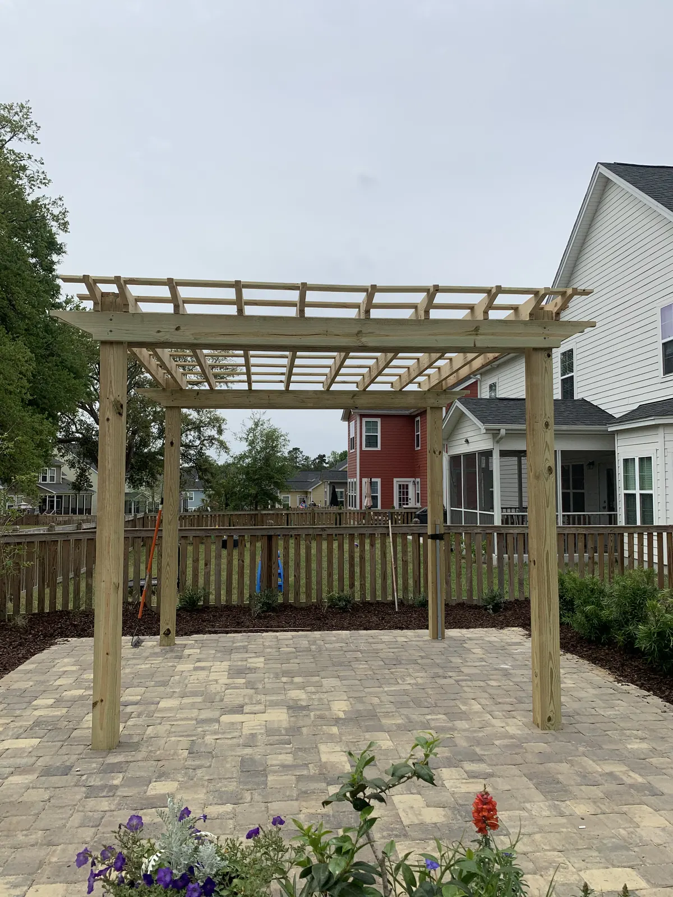

Landscaping & Outdoor Living in Summerville, SC

Local & Family-Run
Summerville Landscaping and Outdoor Living, From Neighbors Who Live Here
Cramers Landscaping is a family company, and Summerville is home. Doug Cramer has worked in landscaping his whole life, with more than 30 years of experience. Before starting Cramers Landscaping in 2016, he helped develop Nexton while working with Yellowstone Landscape, so he knows how Summerville’s neighborhoods were built from the ground up.
Doug and his son Zach design every project themselves, and our own crew builds it, from sod and planting beds to patios, pergolas and outdoor kitchens. You’ll talk to the same people from the first site visit to the final walkthrough.
Two Kinds of Summerville Yards

Established yards that need fixing
Many Summerville yards are 10, 20 or 30 years old, and time catches up with them. The most common calls we get:
- Overgrown plants and trees crowding the house, blocking light, or taking over beds
- Drainage problems caused by that overgrowth: roots and dense beds that trap water where it shouldn’t sit
- Failing driveways and walkways cracked or heaved by age and tree roots
- Irrigation that stopped working years ago and never got fixed
We diagnose the cause, fix it properly, and leave you with a yard that’s easier to live with.
New construction: a blank slate
In newer neighborhoods like Nexton, Summers Corner and Del Webb, you’re often starting with builder-grade sod and not much else. That’s the best time to plan the whole backyard at once: where the patio, pergola or kitchen will go, how water will drain, and what gets planted. Some new builds in Nexton and Summers Corner have drainage issues from the start, so we sort that out before anything goes on top of it.
A Summerville Backyard We’re Proud Of

This family wanted a low-maintenance backyard built for one thing: hosting football games and hanging out with friends.
We built a pergola over a full outdoor kitchen, with a TV wall so nobody misses a play, and a putting green on artificial turf so the yard never needs mowing. To match the modern style of the house, we finished the pergola in Hardie trim. The custom post capitals and pedestals are the kind of detail that takes a build beyond the “standard” kit most companies install.
The result is a yard they actually use every weekend, one that needs very little upkeep.

What We Build in Summerville
Everything we do is part of outdoor living, and it’s all done in-house by one team:
- Landscaping: design and installation, plants and trees, sod, artificial turf, irrigation, drainage and grading, and landscape lighting
- Hardscaping: paver patios, fire pits, walkways, driveways and retaining walls
- Outdoor Structures: pergolas, pavilions, outdoor kitchens and fireplaces
Need something quick? We also do sod, mulch, drainage fixes and irrigation repairs. There’s no minimum job size.
Summerville Neighborhood by Neighborhood
Summerville’s newer communities have some of the most specific rules around, and they differ a lot from one to the next:
- Del Webb at Nexton: the only fence allowed is black aluminum in one of two approved three-rail styles, 48 inches tall at most, in the rear yard. Artificial turf, rock yards and sheds are not allowed, the lawn has to be sod (St. Augustine, zoysia, centipede or hybrid Bermuda), and irrigation is required. Pergolas need approval and can’t be enclosed, fire pits sit at least 10 feet from the house, and lighting is low and ground-mounted, with no spotlights.
- Del Webb at Cane Bay goes further: no fences or walls of any kind, and no sheds or gazebos.
- Summers Corner: wood fences, 6-foot privacy or 4-foot, stained Banyan Brown within 90 days, and a corner-lot fence needs a planted vine or grass every 3 feet from the approved list. Gravel and river rock aren’t allowed in beds, and pergolas are natural wood or white.
- Pine Forest Country Club: every change needs approval. Wood fences use scalloped pickets, black metal is allowed, and in The Reserve black metal is the only fence allowed.
Where the Town of Summerville has jurisdiction, removing any tree of 8 inches or more needs a permit, grand trees of 16 inches or more go to the Tree Protection Board, and anyone paid to work on trees has to sign an affidavit that they have read the ordinance and the pruning standards. Front-yard fences are limited to 4.5 feet if you can see through them and 3 feet if solid. Many of the newer communities are in unincorporated Berkeley or Dorchester County instead, so the rules depend on your address.
Rules as published when we checked in 2026. Guidelines change, and the board or town always has the final say, so we confirm the current rules for your property before a design is final.
Every Service We Offer, Available In Summerville
The projects on this page are only part of what we do. We offer all of our services in Summerville, designed by Doug and Zach and built by our own crew. From the first site visit to the final walkthrough, here’s how a project works.
- Landscaping: landscape design and installation, plants and trees, sod, artificial turf, irrigation, drainage and grading, landscape lighting, mulch and bed edging, fountains and water features
- Hardscaping: patios and pavers, concrete and driveways, retaining walls, fire pits, pool decks
- Outdoor Structures: pergolas, pavilions, outdoor kitchens, outdoor fireplaces, outdoor showers
Small jobs are welcome too. There’s no minimum job size.
Projects We’ve Built in Summerville
Open a project for the full story and photos.


What Projects Typically Cost
| Outdoor kitchen | $8,000 – $20,000+ |
|---|---|
| Pergola | $10,000 – $30,000 |
| Pavilion | $30,000 – $90,000+ |
| Paver patio | around $18 per sq ft |
| Artificial turf | from $13 per sq ft |
Ranges are typical, not quotes. Size, materials, site conditions and finishes (a roof or ceiling, trim, electrical, appliances) move the number. You’ll get an exact price after the consultation.
Neighborhoods We Work In Around Summerville
We’ve worked all over Summerville, including Nexton, Summers Corner, Del Webb, Cane Bay Plantation, Pine Forest Country Club, Wescott Plantation, Weatherstone, Knightsville, White Gables, The Ponds, Ashborough East and Drayton Oaks.
Frequently Asked Questions
How soon can you come look at my yard?
Usually within a week, and often in just a couple of days. Doug or Zach comes out in person, and the consultation is free.
Do I have to pay for a design?
Not for smaller, straightforward jobs. If a job does not need a design, or a quick drawing will do, we do not charge for it, and we quote and plan those right after the consultation. A larger project with a full drawn design carries a design fee, and what it comes to depends on the job. 3D renderings are available as an optional add-on.
My new-construction yard in Nexton or Summers Corner holds water. Can you fix it?
Yes. Drainage problems are common in new builds around Summerville. We regrade and add drainage so water moves away from the house, and we can plan the lawn and beds at the same time so it only gets done once.
Does my neighborhood need HOA approval?
Some Summerville neighborhoods do. We’ll let you know up front, design to your HOA’s guidelines, and we can prepare and submit the application for you.
Do you take small jobs like sod, mulch or an irrigation repair?
Yes. There’s no minimum job size. A job that’s less than a day’s work is simply priced for the partial day.
Do you handle permits, gas and electrical for kitchens and pergolas?
Yes, all in-house. Permits, gas lines, electrical and plumbing are handled by our own team, so nothing gets left for you to chase down after we finish.
Talk to Doug or Zach About Your Yard
Tell us what you have in mind for your Summerville yard, whether that’s a quick sod job or a full backyard, and we’ll set up a free consultation at your home.
This site is protected by reCAPTCHA. Google’s Privacy Policy and Terms of Service apply.